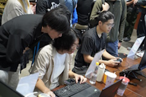

活動舉辦
關於我們
聯絡方式
異校遊戲大亂鬥 (Student Show Game)
活動報名
同學們在製作自己的遊戲專題時，測試自己的遊戲作品與收集反饋意見，
僅能透過同屆同學或是學弟妹們幫忙。
在本活動中，除了可以和它校同學們，相互認識之外，
更重要的是，在與它校同學們交流中，可以得到更多不同的反饋意見。
另外，我們也非常鼓勵正在開發的獨立遊戲團隊一起來共襄盛舉一同交流。
讓大家在自由交流的同時，也能隨時將自己帶來的作品拿出來跟大家交流！

TIGG是甚麼？
中部獨立遊戲勇者交流會｜獨立遊戲勇者（Taichung Indie Game Group｜TiGG）是一群以中部獨立遊戲熱忱的人所創立的非營利社群組織，期望在中部也能屬於自己的ACG活動。
歷屆工友
TiMU
Nike
黏黏
聯絡方式
對於我們的活動有任何想法、建議，歡迎連絡：
tigg.tw@gmail.com